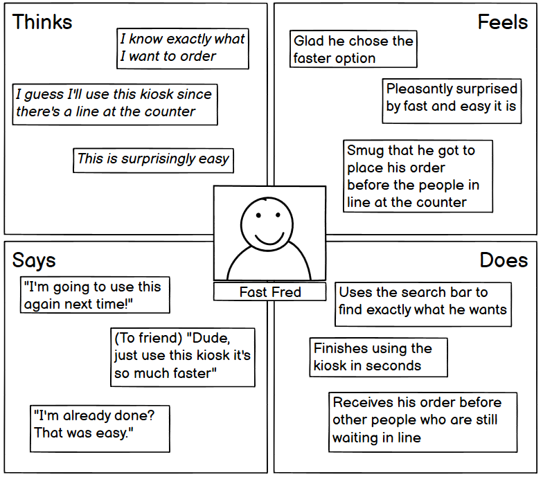
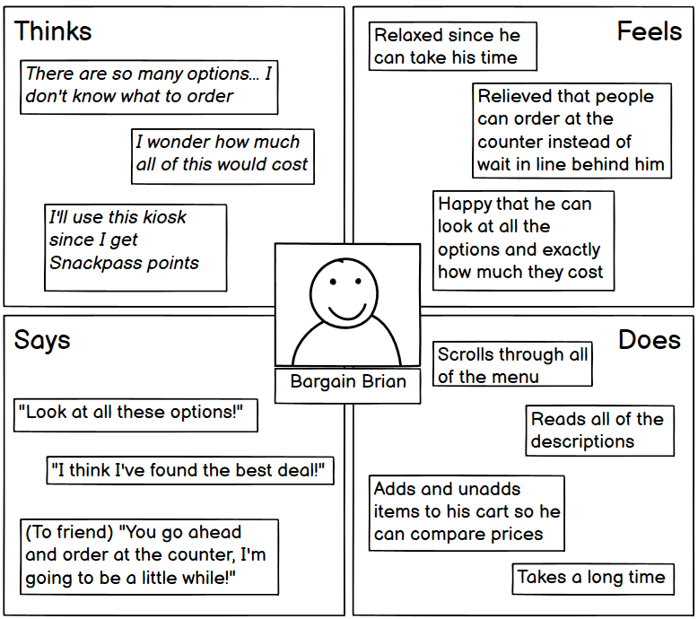

CSCI1300 UI/UX Assignment One: Personas & Storyboarding
Interface : Snackpass Checkout Kiosk

This Snackpass Self-Order Kiosk at Ten One Tea House allows customers a faster alternative
to order their drinks or pastries without the help of an employee.
Customers can navigate
through the menu using the touch screen display. Once they are ready to pay, they can simply
insert or tap their card on the provided scanner located directly beneath the screen.
Observations and Interviews
Overall, the three users interviewed seemed to interact very easily with the kiosk. They were able to quickly and without great difficulty navigate through the menu, find their desired item, and pay using a credit card. The only time that users seemed to hesitate was in finding the credit card swiper, but it only took a second or two until they realized that it was located directly below the screen.
- What made you choose to order from the kiosk as opposed to the counter?
> It's usually faster, more efficient, and I can track the cost more easily. - What was your goal with the kiosk, and did you achieve it?
> All users said their goal was to order a drink for a good price, and they were easily able to do so. - How did the time you took to use the kiosk compare to your expectations for how long it would take?
> Users said it either took as much time as expecting or less. - Were there any positive or negative surprises when using this kiosk?
> Users were mainly surprised that it was so easy. One user noted that the ability to earn Snackpass points was a pleasant surprise. - Next time you order from Ten One, would you use this kiosk or the counter to order and why?
> Would probably use the kiosk again because it was easier, faster, and could track cost, but if there was a line to the kiosk
and no one line to the counter, they would go to the counter.
Persona 1 : Fast Fred
- Fast Fred is a customer who wants to get their order and go, quickly and efficiently.
- Fast Fred doesn't want to wait for a long time in line, and there is no line to the kiosk.
- Fast Fred finds that he is able to easily find exactly what he'd like to order via the kiosk and check out using his credit card.
- Fast Fred represents the majority of users since most people choose to use the kiosk as a faster alternative to ordering and checking out at the counter with the help of a cashier.
Persona 2 : Bargain Brian
- Bargain Brian is a customer who would like to get his order for the best price.
- Bargain Brian takes an especially long time at the kiosk because he wants to look through all of the menu to make sure he finds the best option.
- Bargain Brian represents users who choose the kiosk over the counter because they can take their time browsing the menu and weighing their options.
- These users like that you can see how much your bill is before you check out and can easily choose to remove or add items.
Storyboard